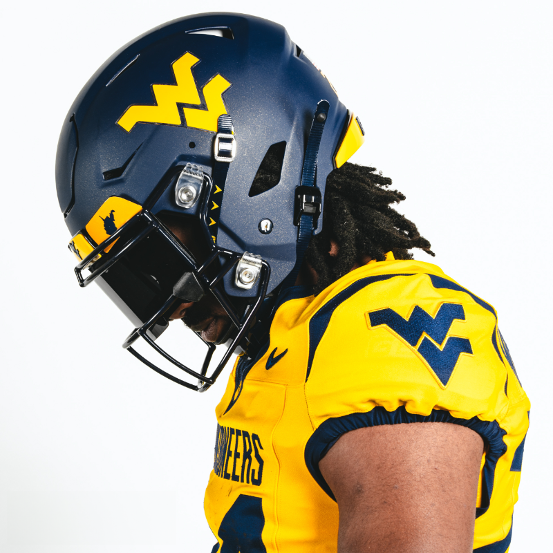

During the 2023 Gold Blue Spring game, Mountaineer Nation got to see the new look WVU will sport this fall. Three different helmets, jerseys, and pants were unveiled on Saturday. The uniform moves from the old "Vapor Untouchable" uniform chassis to the new "FUSE" chassis. The "FUSE" chassis is the latest from Nike which features a new "cow catcher" collar and more seams and laser cut ventilation holes.
The Helmets:
Of the three main elements of the uniforms, the helmets received little to no changes. The white helmet is a carry over from the 2023 season which itself is a modified version of the 2022 Country Roads uniform minus the helmet stripe. Gold helmets remain unchanged from the 2018 season when blue bumper decals were added to the front and back of the helmets, the only change since its introduction in 2013.Of the three main elements of the uniforms, the helmets received little to no changes. The white helmet is a carry over from the 2023 season which itself is a modified version of the 2022 Country Roads uniform minus the helmet stripe. Gold helmets remain unchanged from the 2018 season when blue bumper decals were added to the front and back of the helmets, the only change since its introduction in 2013.The Jerseys:
The biggest changes are definitely on the jerseys. For starters, the Flying WV logo returns to the sleeves as it was on WVU's jerseys from 1985-2012. The logo is traditional embroidery, but the spacing in the logo between the W and V seems more narrow. It's unknown if that was simply a production issue at Nike or not.
The typeface is a carry over which has been used across all WVU athletic teams. The influence of the Country Road uniforms is easy to see on these new jerseys. The collar logo and wordmark across the chest (as well as the gold trim on the numbers of the white jerseys) are taken directly from those uniforms.
The word mark which is "Mountaineers" for the blue and gold jerseys and "West Virginia" for the white. By its design, the word mark is taller than others seen in college football and the NFL, which pushes the number much lower on the jerseys. It works great on the other various applications – end zone art, stadium signage, and media graphics. However, it tends to make the jerseys clunky which was an issue with both Country Roads uniforms.
Shoulder stripes have been added to each jersey and seem to be a carbon copy of the old Houston Texans jerseys. My guess is the thought process was an homage to the 2007-2012 jerseys? Even though those stripes were more rounded on the edge and were actually on the sleeves not the shoulders of the jerseys.

The Pants:
The home run part of the uniform. The fans have been clamoring for stripes to return for years and Nike delivered. Not since 2012 (excluding the two different Country Roads uniforms) have the pants featured a stripe of any kind. Dubbed the "Nehlen Stripes," the blue and gold pants feature a traditional double stripe. The white pants have a blue / gold / blue stripe; the exact stripe pattern the white pants used from 2001-2004. The gold pants have a double blue stripe which was used from 1980-1993. The blue pants have a double gold stripe similar to last year's Country Road uniforms minus the sublimated road map graphics. Each pair of pants feature a Flying WV on the right hip and the Nike Swoosh on the right. Both seem to be roughly the same size as the previous set. However, the Flying WV seems to be a little off on the spacing between the W and V as with the case with the logo on the jersey sleeves.Add an important quotation or highlighted observation here when appropriate.
Final Thoughts:
Definitely some good and some bad. While we have come a long way from the 2013-2018 uniforms, it is a bit frustrating because it's so close to being a timeless modern classic. Without the word mark and shoulder stripes you would have a modern version of the Nehlen Era uniforms. My opinion has always been WVU should style their uniforms like a pro team because for the state of West Virginia, WVU is the "pro team." In a way they've accomplished that, a simple modern look that borrows a lot from the NFL's Texans. As with in years past, we will see 10-12 different uniform combos per season: some will be better than others. I still feel the white helmets with blue and gold jerseys feel clunky due to those jerseys having no white in them. It was also hinted during the broadcast of the Spring Game that other alternate uniforms are on the way but were not revealed. It has highly been rumored all Spring that the Mountaineers will sport an all-black uniform for the season opener against Penn State. What are your thoughts? Too many changes or too little? Do you believe in the rumors of the black uniforms or do you think they'll be other alternate uniforms? Will the Country Roads uniforms return or perhaps a new version?